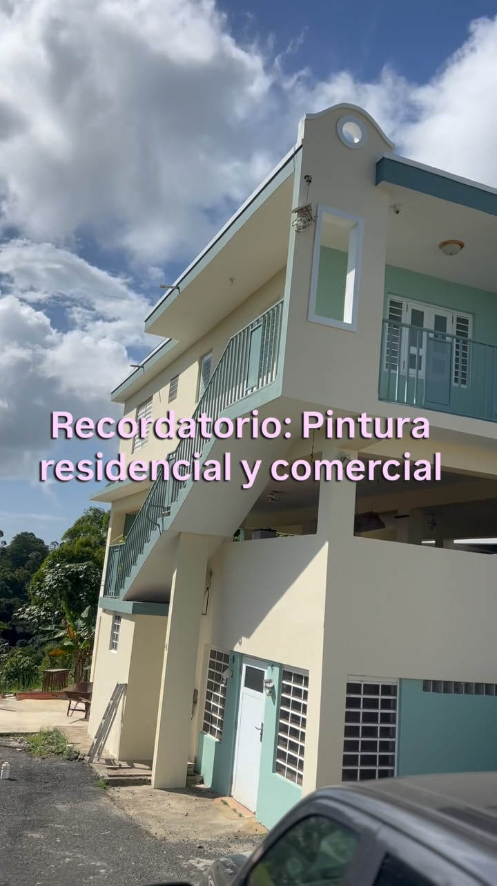
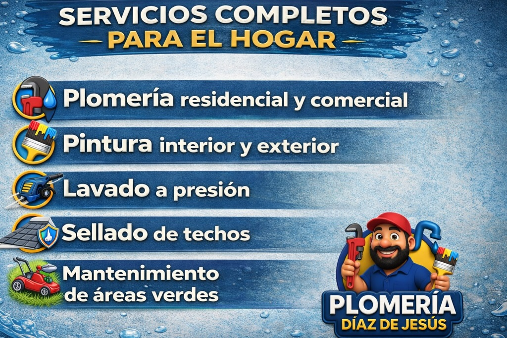
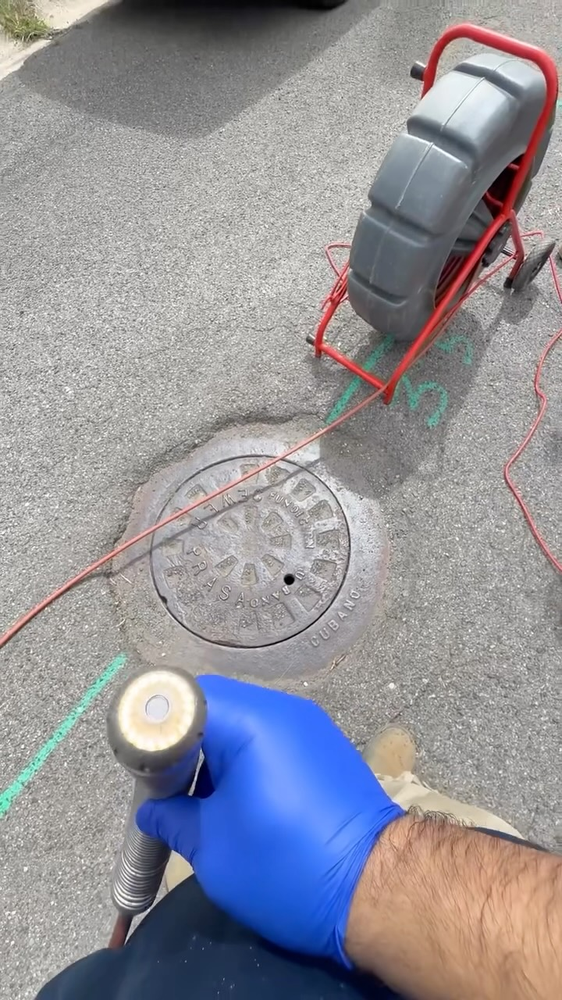

Plomero en Caguas · Puerto Rico
TU PLOMERO DE CONFIANZA EN CAGUAS
Plomería, pintura, sellado de techos y más en Caguas y todo Puerto Rico. Escríbenos y resolvemos.
Plomero en Caguas · Puerto Rico
Plomería, pintura, sellado de techos y más en Caguas y todo Puerto Rico. Escríbenos y resolvemos.
Lo que hacemos



Reparaciones e instalaciones con trabajo limpio y garantizado.

Sistemas de agua completos para que nunca te falte el agua.


Pintura profesional para interiores y exteriores.

Protege tu techo contra filtraciones todo el año.
Paredes, techos y exteriores como nuevos.
Galería
Quiénes somos
Plomería Díaz De Jesús: servicios de plomería en Caguas y todo Puerto Rico, con el respaldo de un equipo que también domina la pintura profesional, el sellado de techos, las áreas verdes y el lavado a presión. Un solo contacto para dejar tu propiedad al día.
Hablar con nosotrosPreguntas frecuentes
Estamos en Caguas, Puerto Rico.
Plomería residencial y comercial y más: Plomería residencial y comercial, Instalación de cisternas, Pintura profesional.
Escríbenos por WhatsApp al 787-507-7809 o llena el formulario de contacto y te respondemos por WhatsApp.
Sí, síguenos en Instagram como @@plomeria_diaz_de_jesus.
No, además de plomería hacemos pintura, sellado de techos y más.